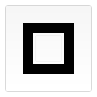
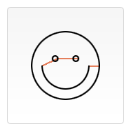
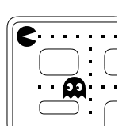

绘制形状
栅格
在我们开始画图之前，我们需要了解一下画布栅格（canvas grid）以及坐标空间。 上一页中的HTML模板中有个宽150px, 高150px的canvas元素。 如右图所示，canvas元素默认被网格所覆盖。通常来说网格中的一个单元相当于canvas元素中的一像素。 栅格的起点为左上角（坐标为（0,0））。所有元素的位置都相对于原点定位。所以图中蓝色方形左上角的坐标为距离左边（X轴）x像素，距离上边（Y轴）y像素（坐标为（x,y））。 在课程的最后我们会平移原点到不同的坐标上，旋转网格以及缩放。现在我们还是使用原来的设置。

绘制矩形
不同于SVG，HTML中的元素canvas只支持一种原生的图形绘制：矩形。 所有其他的图形的绘制都至少需要生成一条路径。不过，我们拥有众多路径生成的方法让复杂图形的绘制成为了可能。
首先，我们回到矩形的绘制中。canvas提供了三种方法绘制矩形：
//绘制一个填充的矩形
fillRect(x, y, width, height)
//绘制一个矩形的边框
strokeRect(x, y, width, height)
//清除指定矩形区域，让清除部分完全透明。
clearRect(x, y, width, height)上面提供的方法之中每一个都包含了相同的参数。x与y指定了在canvas画布上所绘制的矩形的左上角（相对于原点）的坐标。width和height设置矩形的尺寸。
下面的draw() 函数是前一页中取得的，现在就来使用上面的三个函数。
function draw(){
var canvas = document.getElementById("canvas");
if(canvas.getContext){
var ctx = canvas.getContext('2d');
ctx.fillRect(25,25,100,100);
ctx.clearRect(45,45,60,60);
ctx.strokeRect(50,50,50,50);
}
}
结果如下：

fillRect()函数绘制了一个边长为100px的黑色正方形。 clearRect()函数从正方形的中心开始擦除了一个60*60px的正方形，接着strokeRect()在清除区域内生成一个50*50的正方形边框。
接下来我们能够看到clearRect()的两个可选方法，然后我们会知道如何改变渲染图形的填充颜色及描边颜色。
不同于下一节所要介绍的路径函数（path function），以上的三个函数绘制之后会马上显现在canvas上，即时生效。
绘制路径
图形的基本元素是路径。路径是通过不同颜色和宽度的线段或曲线相连形成的不同形状的点的集合。 一个路径，甚至一个子路径，都是闭合的。使用路径绘制图形需要一些额外的步骤。
- 首先，你需要创建路径起始点。
- 然后你使用画图命令去画出路径。
- 之后你把路径封闭。
- 一旦路径生成，你就能通过描边或填充路径区域来渲染图形。
以下是所要用到的函数：
beginPath() //新建一条路径，生成之后，图形绘制命令被指向到路径上生成路径。
closePath() //闭合路径之后图形绘制命令又重新指向到上下文中。
stroke() //通过线条来绘制图形轮廓。
fill() //通过填充路径的内容区域生成实心的图形。生成路径的第一步叫做beginPath()。本质上，路径是由很多子路径构成， 这些子路径都是在一个列表中，所有的子路径（线、弧形、等等）构成图形。 而每次这个方法调用之后，列表清空重置，然后我们就可以重新绘制新的图形。
注意：当前路径为空，即调用beginPath()之后，或者canvas刚建的时候， 第一条路径构造命令通常被视为是moveTo（），无论最后的是什么。出于这个原因，你几乎总是要在设置路径之后专门指定你的起始位置。
第二步就是调用函数指定绘制路径，本文稍后我们就能看到了。
第三，就是闭合路径closePath(),不是必需的。 这个方法会通过绘制一条从当前点到开始点的直线来闭合图形。如果图形是已经闭合了的，即当前点为开始点，该函数什么也不做。
注意：当你调用fill()函数时，所有没有闭合的形状都会自动闭合，所以你不需要调用closePath()函数。但是调用stroke()时不会自动闭合。
绘制一个三角形
例如，绘制三角形的代码如下：
function draw(){
var canvas = document.getElementById('canvas');
if(canvas.getContext){
var ctx = canvas.getContext('2d');
ctx.beginPath();
ctx.moveTo(75,50);
ctx.lineTo(100,75);
ctx.lineTo(100,25);
ctx.fill();
}
}
输出看上去如下：

移动笔触
一个非常有用的函数，而这个函数实际上并不能画出任何东西，也是上面所描述的路径列表的一部分，这个函数就是moveTo()。 或者你可以想象一下在纸上作业，一支钢笔或者铅笔的笔尖从一个点到另一个点的移动过程。
moveTo(x, y) //将笔触移动到指定的坐标x以及y上。当canvas初始化或者beginPath()调用后，你通常会使用moveTo()函数设置起点。 我们也能够使用moveTo()绘制一些不连续的路径。看一下下面的笑脸例子。我将用到moveTo()方法（红线处）的地方标记了。
你可以尝试一下，使用下边的代码片。只需要将其复制到之前的draw()函数即可。
function draw() {
var canvas = document.getElementById('canvas');
if (canvas.getContext){
var ctx = canvas.getContext('2d');
ctx.beginPath();
ctx.arc(75,75,50,0,Math.PI*2,true); // 绘制
ctx.moveTo(110,75);
ctx.arc(75,75,35,0,Math.PI,false); // 口(顺时针)
ctx.moveTo(65,65);
ctx.arc(60,65,5,0,Math.PI*2,true); // 左眼
ctx.moveTo(95,65);
ctx.arc(90,65,5,0,Math.PI*2,true); // 右眼
ctx.stroke();
}
}

线
绘制直线，需要用到的方法lineTo()。
lineTo(x, y) //绘制一条从当前位置到指定x以及y位置的直线。该方法有两个参数：x以及y ，代表坐标系中直线结束的点。 开始点和之前的绘制路径有关，之前路径的结束点就是接下来的开始点，等等。。。开始点也可以通过moveTo()函数改变。
下面的例子绘制两个三角形，一个是填充的，另一个是描边的。
function draw() {
var canvas = document.getElementById('canvas');
if (canvas.getContext){
var ctx = canvas.getContext('2d');
// 填充三角形
ctx.beginPath();
ctx.moveTo(25,25);
ctx.lineTo(105,25);
ctx.lineTo(25,105);
ctx.fill();
// 描边三角形
ctx.beginPath();
ctx.moveTo(125,125);
ctx.lineTo(125,45);
ctx.lineTo(45,125);
ctx.closePath();
ctx.stroke();
}
}
你会注意到填充与描边三角形步骤有所不同。正如上面所提到的，因为路径使用填充（filled）时，路径自动闭合，使用描边（stroked）则不会闭合路径。 如果没有添加闭合路径closePath()到描述三角形函数中，则只绘制了两条线段，并不是一个完整的三角形。
圆弧
绘制圆弧或者圆，我们使用arc()方法。当然可以使用arcTo()，不过这个的实现并不是那么的可靠，所以我们这里不作介绍。
//画一个以（x,y）为圆心的以radius为半径的圆弧（圆），从startAngle开始到endAngle结束，按照anticlockwise给定的方向（默认为顺时针）来生成。
arc(x, y, radius, startAngle, endAngle, anticlockwise)
//根据给定的控制点和半径画一段圆弧，再以直线连接两个控制点。
arcTo(x1, y1, x2, y2, radius)这里详细介绍一下arc方法，该方法有六个参数：x,y为绘制圆弧所在圆上的圆心坐标。 radius为半径。startAngle以及endAngle参数用弧度定义了开始以及结束的弧度。 这些都是以x轴为基准。参数anticlockwise为一个布尔值。为true时，是逆时针方向，否则顺时针方向。
注意：arc()函数中的角度单位是弧度，不是度数。角度与弧度的js表达式:radians=(Math.PI/180)*degrees。
下面的例子比上面的要复杂一下，下面绘制了12个不同的角度以及填充的圆弧。
下面两个for循环，生成圆弧的行列（x,y）坐标。每一段圆弧的开始都调用beginPath()。代码中，每个圆弧的参数都是可变的，实际生活中，我们并不需要这样做。
x,y坐标是可变的。半径（radius）和开始角度（startAngle）都是固定的。结束角度（endAngle）在第一列开始时是180度（半圆）然后每列增加90度。最后一列形成一个完整的圆。
clockwise语句作用于第一、三行是顺时针的圆弧，anticlockwise作用于二、四行为逆时针圆弧。if语句让一、二行描边圆弧，下面两行填充路径。
function draw() {
var canvas = document.getElementById('canvas');
if (canvas.getContext){
var ctx = canvas.getContext('2d');
for(var i=0;i<4;i++){
for(var j=0;j<3;j++){
ctx.beginPath();
var x = 25+j*50; // x 坐标值
var y = 25+i*50; // y 坐标值
var radius = 20; // 圆弧半径
var startAngle = 0; // 开始点
var endAngle = Math.PI+(Math.PI*j)/2; // 结束点
var anticlockwise = i%2==0 ? false : true; // 顺时针或逆时针
ctx.arc(x, y, radius, startAngle, endAngle, anticlockwise);
if (i>1){
ctx.fill();
} else {
ctx.stroke();
}
}
}
}
}
二次贝塞尔曲线及三次贝塞尔曲线
下一个十分有用的路径类型就是贝塞尔曲线。二次及三次贝塞尔曲线都十分有用，一般用来绘制复杂有规律的图形。
quadraticCurveTo(cp1x, cp1y, x, y) //绘制二次贝塞尔曲线，cp1x,cp1y为一个控制点，x,y为结束点。
bezierCurveTo(cp1x, cp1y, cp2x, cp2y, x, y) //绘制三次贝塞尔曲线，cp1x,cp1y为控制点一，cp2x,cp2y为控制点二，x,y为结束点。下边的图能够很好的描述两者的关系，二次贝塞尔曲线有一个结束点（蓝色）以及一个控制点（红色），而三次贝塞尔曲线有两个控制点，一个结束点；他们都拥有一个初始位置的点。
参数x、y在这两个方法中都是结束点坐标。cp1x,cp1y为坐标中的第一个控制点，cp2x,cp2y为坐标中的第二个控制点。
{kind=link}
使用二次以及三次贝塞尔曲线是有一定的难度的，因为不同于像Adobe Illustrators这样的矢量软件，我们所绘制的曲线没有直接的视觉反馈给我们。 这让绘制复杂的图形十分的困难。在下面的例子中，我们会绘制一些简单有规律的图形，如果你有时间，以及更多的耐心很多复杂的图形你都可以绘制出来。
下面的这些例子没有多少是困难的。这两个例子中我们会连续绘制贝塞尔曲线，最后会形成复杂的图形。
二次贝塞尔曲线
这个例子使用多个贝塞尔曲线来渲染对话气泡。
function draw() {
var canvas = document.getElementById('canvas');
if (canvas.getContext) {
var ctx = canvas.getContext('2d');
// 二次贝塞尔曲线
ctx.beginPath();
ctx.moveTo(75,25);
ctx.quadraticCurveTo(25,25,25,62.5);
ctx.quadraticCurveTo(25,100,50,100);
ctx.quadraticCurveTo(50,120,30,125);
ctx.quadraticCurveTo(60,120,65,100);
ctx.quadraticCurveTo(125,100,125,62.5);
ctx.quadraticCurveTo(125,25,75,25);
ctx.stroke();
}
}
矩形
直接在画布上绘制矩形的三个额外方法，正如我们开始所见的Drawing rectangles，同样，也有rect()方法，将一个矩形路径增加到当前路径上。
rect(x, y, width, height) //绘制一个左上角坐标为（x,y），宽高为width以及height的矩形。当该方法执行的时候，moveTo()方法自动设置坐标参数（0,0）。也就是说，当前笔触自动重置回默认坐标。
组合使用
目前为止，每一个例子中的每个图形都只用到一种类型的路径。 然而，绘制一个图形并没有限制使用数量以及类型。所以在最后的一个例子里，让我们组合使用所有的路径函数来重现一组著名的游戏人物。
function draw() {
var canvas = document.getElementById('canvas');
if (canvas.getContext){
var ctx = canvas.getContext('2d');
roundedRect(ctx,12,12,150,150,15);
roundedRect(ctx,19,19,150,150,9);
roundedRect(ctx,53,53,49,33,10);
roundedRect(ctx,53,119,49,16,6);
roundedRect(ctx,135,53,49,33,10);
roundedRect(ctx,135,119,25,49,10);
ctx.beginPath();
ctx.arc(37,37,13,Math.PI/7,-Math.PI/7,false);
ctx.lineTo(31,37);
ctx.fill();
for(var i=0;i<8;i++){
ctx.fillRect(51+i*16,35,4,4);
}
for(i=0;i<6;i++){
ctx.fillRect(115,51+i*16,4,4);
}
for(i=0;i<8;i++){
ctx.fillRect(51+i*16,99,4,4);
}
ctx.beginPath();
ctx.moveTo(83,116);
ctx.lineTo(83,102);
ctx.bezierCurveTo(83,94,89,88,97,88);
ctx.bezierCurveTo(105,88,111,94,111,102);
ctx.lineTo(111,116);
ctx.lineTo(106.333,111.333);
ctx.lineTo(101.666,116);
ctx.lineTo(97,111.333);
ctx.lineTo(92.333,116);
ctx.lineTo(87.666,111.333);
ctx.lineTo(83,116);
ctx.fill();
ctx.fillStyle = "white";
ctx.beginPath();
ctx.moveTo(91,96);
ctx.bezierCurveTo(88,96,87,99,87,101);
ctx.bezierCurveTo(87,103,88,106,91,106);
ctx.bezierCurveTo(94,106,95,103,95,101);
ctx.bezierCurveTo(95,99,94,96,91,96);
ctx.moveTo(103,96);
ctx.bezierCurveTo(100,96,99,99,99,101);
ctx.bezierCurveTo(99,103,100,106,103,106);
ctx.bezierCurveTo(106,106,107,103,107,101);
ctx.bezierCurveTo(107,99,106,96,103,96);
ctx.fill();
ctx.fillStyle = "black";
ctx.beginPath();
ctx.arc(101,102,2,0,Math.PI*2,true);
ctx.fill();
ctx.beginPath();
ctx.arc(89,102,2,0,Math.PI*2,true);
ctx.fill();
}
}
// 封装的一个用于绘制圆角矩形的函数.
function roundedRect(ctx,x,y,width,height,radius){
ctx.beginPath();
ctx.moveTo(x,y+radius);
ctx.lineTo(x,y+height-radius);
ctx.quadraticCurveTo(x,y+height,x+radius,y+height);
ctx.lineTo(x+width-radius,y+height);
ctx.quadraticCurveTo(x+width,y+height,x+width,y+height-radius);
ctx.lineTo(x+width,y+radius);
ctx.quadraticCurveTo(x+width,y,x+width-radius,y);
ctx.lineTo(x+radius,y);
ctx.quadraticCurveTo(x,y,x,y+radius);
ctx.stroke();
}

重要的一点是绘制上下文中使用到了fillStyle属性，以及封装函数（例子中的roundedRect()）。使用封装函数对于减少代码量以及复杂度十分有用。
在稍后的课程里，我们会回头再看看fillStyle样式的更多细节。这章节中，我们所做的关于fillStyle样式仅是改变填充颜色，由默认的黑色到白色，然后又是黑色。
Path2D 对象
正如我们在前面例子中看到的，你可以使用一系列的路径和绘画命令来把对象“画”在画布上。 为了简化代码和提高性能，Path2D对象已可以在较新版本的浏览器中使用，用来缓存或记录绘画命令，这样你将能快速地回顾路径。
Path2D() //Path2D()会返回一个新初始化的Path2D对象（可能将某一个路径作为变量——创建一个它的副本，或者将一个包含SVG path数据的字符串作为变量）。
new Path2D(); // 空的Path对象
new Path2D(path); // 克隆Path对象
new Path2D(d); // 从SVG建立Path对象所有的路径方法比如moveTo, rect, arc或quadraticCurveTo等，如我们前面见过的，都可以在Path2D中使用。
Path2D API 添加了 addPath作为将path结合起来的方法。当你想要从几个元素中来创建对象时，这将会很实用。比如：
Path2D.addPath(path [, transform]) //添加了一条路径到当前路径（可能添加了一个变换矩阵）。Path2D 示例
在这个例子中，我们创造了一个矩形和一个圆。它们都被存为Path2D对象，后面再派上用场。 随着新的Path2D API产生，几种方法也相应地被更新来使用Path2D对象而不是当前路径。 在这里，带路径参数的stroke和fill可以把对象画在画布上。
function draw() {
var canvas = document.getElementById('canvas');
if (canvas.getContext){
var ctx = canvas.getContext('2d');
var rectangle = new Path2D();
rectangle.rect(10, 10, 50, 50);
var circle = new Path2D();
circle.moveTo(125, 35);
circle.arc(100, 35, 25, 0, 2 * Math.PI);
ctx.stroke(rectangle);
ctx.fill(circle);
}
}